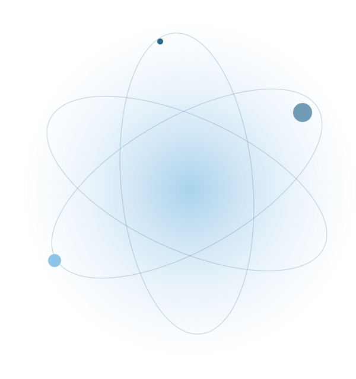
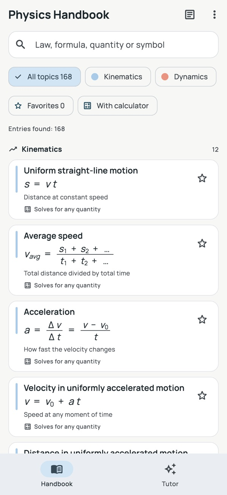
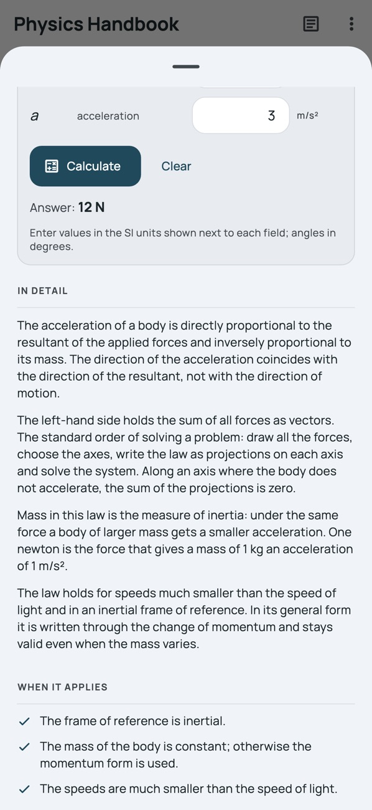

Formülü anlayın
Her formülün yanında semboller, SI birimleri ve kullanım koşulları bulunur. Formülün ne anlama geldiğini ve ne zaman geçerli olduğunu görün.
Biraz daha "artık anladım"
Nedenini bilin. Nasılını çözün.
İlk yasadan sonuca kadar. Formüller, anlaşılır açıklamalar ve hesaplayıcılar bir arada, cebinizde.
Ücretsiz indirme · isteğe bağlı Pro özellikleri


Uygulama ekran görüntüsü
Özellikler
Her formülün yanında semboller, SI birimleri ve kullanım koşulları bulunur. Formülün ne anlama geldiğini ve ne zaman geçerli olduğunu görün.
Bir bilinmeyen seçin ve değerlerinizi girin. Hesap makineleri, niceliklerin birlikte nasıl değiştiğini keşfetmenize yardımcı olur.
Çözümlü örnekler, fiziksel sabitler ve kişisel bir formül sayfası, tekrarı biraz daha kolay hale getirir.
Uygulamaya göz atın
Gerçek ekran görüntüleri. İçeriğin ne kadar iyi olduğunu daha iyi anlayın.

FAQ
Başlamadan önce cevaplar
Evet. Rehber ve referans içeriği, kurulumdan sonra çevrimdışı olarak kullanılabilir. Apple Intelligence özellikleri ayrıca uyumlu bir cihaz ve indirilmiş bir sistem modeli gerektirir.
Uygulamayı ücretsiz olarak indirebilirsiniz. Referans rehber, Pro sürümü olmadan da kullanışlıdır; ek öğrenme araçları ve yapay zeka özellikleri, uygulamanın Pro planına bağlıdır. App Store ve uygulama içi satın alma ekranı, mevcut seçenekleri gösterir.
Hayır. Rehberi Apple Intelligence olmadan da okuyabilir ve kullanabilirsiniz. Yapay zeka destekli eğitmen isteğe bağlıdır ve Apple Intelligence'ın etkin olduğu uyumlu bir iPhone veya iPad gerektirir; desteklenen diller sisteminize bağlıdır.
Uygulama, iPhone ve iPad için kullanılabilir. Mevcut işletim sistemi ve cihaz gereksinimleri için App Store sayfasını kontrol edin.
Ücretsiz indirme · isteğe bağlı Pro özellikleri
Yapay zekâ eğitmeni bir Pro özelliğidir. Uyumlu bir iPhone veya iPad, iOS/iPadOS 26 veya üzeri ve etkin Apple Intelligence gerektirir. Kullanılabilirlik dile ve bölgeye göre değişir. Yapay zekâ yanıtları hata içerebilir.